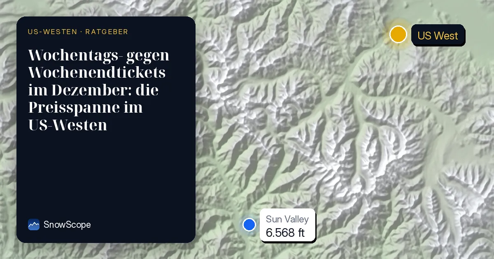
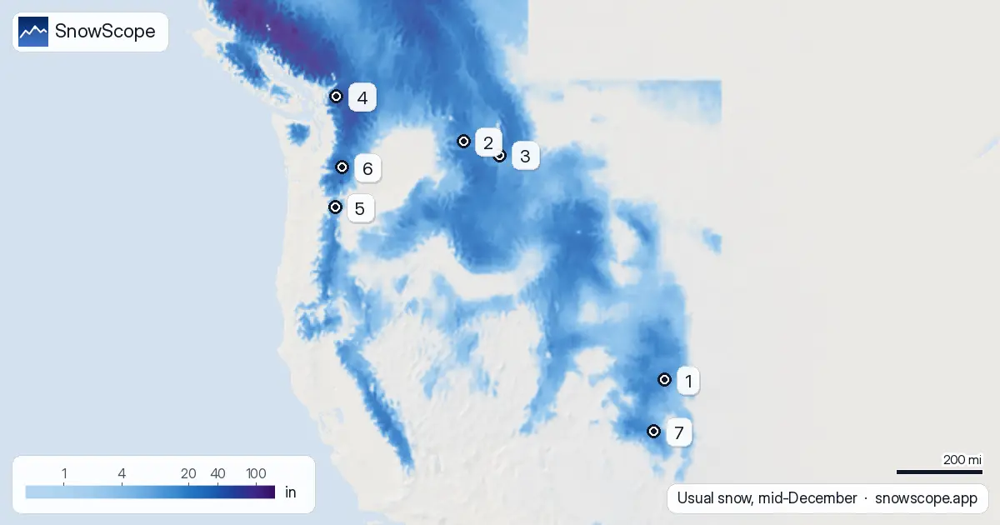

Wochentags- gegen Wochenendtickets im Dezember: die Preisspanne im US-Westen
Der günstigste Dezember-Skitrick im US-Westen ist weder ein Pass noch ein Gutschein. Es ist der Kalender. Sieben Skigebiete auf unserer Liste veröffentlichen einen klaren Wochentags- oder Nebenzeitpreis, und die Lücke zum Wochenendpreis ist echtes Geld.
Die Live-Schneeprognose für US West in der SnowScope-AppSchneehöhen, Pulverschnee-Alarme und 3D-Karte, gratis.
Die Spanne, Gebiet für Gebiet
Ski Cooper (Colorado): 49 $ von Montag bis Freitag außerhalb der Feiertage, 99 $ am Wochenende und an Feiertagen. Lookout Pass (Idaho): 63 $ unter der Woche mit Reservierung, 75 $ am Wochenende, 79 $ in der Feiertagszeit. Montana Snowbowl: 78 $ unter der Woche, 85 $ am Wochenende und an Feiertagen.
Mt. Baker (Washington): 98,80 $ von Montag bis Donnerstag außerhalb der Feiertage, 115,42 $ von Freitag bis Sonntag und an Feiertagen, Steuer nicht inbegriffen. Timberline (Oregon): 129 $ außerhalb der Spitzenzeiten, 161 $ an Spitzentagen, zu denen Wochenenden und die Zeit vom 21. Dezember bis 1. Januar zählen. White Pass (Washington): online ab 69 $ außerhalb der Spitzenzeiten und ab 89 $ an Spitzentagen, steigend, je mehr Termine verkauft sind.

Eine Ausnahme: Wolf Creeks Spitzentage sind feste Daten, keine Wochenenden
Wolf Creek in Colorado unterscheidet nicht nach Wochentag. Das Erwachsenenticket kostet 96 $ an normalen Tagen und 110 $ an Spitzentagen, und im Dezember sind die Spitzentage der 20. bis 23. und der 26. bis 31. Dezember. Ein Dezember-Samstag vor dem 20. ist dort ein normaler Tag.
Ist der Schnee an einem Wochentag Mitte Dezember da?
Die Wochentagsersparnis lohnt sich nur, wenn der Schnee auch da ist. Nach unserer Historie liegt der Anteil der Winter mit mindestens 20 in (50 cm) auf Mittelstationshöhe am 15. Dezember bei 93 % in Mt. Baker, 87 % in White Pass, 85 % in Lookout Pass, 83 % in Montana Snowbowl, 78 % in Timberline, 72 % in Wolf Creek und 70 % in Ski Cooper.
Typische Höhen auf Mittelstationshöhe reichen an diesem Datum von 26 in (66 cm) bei Ski Cooper bis 46 in (116 cm) bei Mt. Baker und 52 in (132 cm) bei Timberline.
So nutzt man es
Planen Sie eine Reise von Montag bis Donnerstag in der zweiten oder dritten Dezemberwoche: Sie vermeiden Wochenendpreise und die Feiertagszeit, und unsere Historie sagt, dass die Chancen auf guten Schnee an den meisten dieser Gebiete bereits hoch sind. Ein Freitag bei Ski Cooper kostet den Wochentagspreis; ein Samstag den Wochenendpreis.
Tipps für Skifahrer
- Zwei Wochentage statt eines langen Wochenendes nehmen: das ist das günstigste Upgrade im Skifahren.
- Den 21. Dezember bis 1. Januar bei Timberline und den 20. bis 31. Dezember bei Wolf Creek meiden, wenn der Preis zählt.
- White Pass früh buchen für seinen Nebenzeit-Mindestpreis, und Lookout Pass für seinen Wochentagsrabatt aufheben.
- Mt. Baker verkauft nur vor Ort: Karte oder Bargeld mitbringen und früh kommen.
Quellen und Nachweise
- Ski Cooper, day pass 2026-27 (official) www.skicooper.com/cooper-day-pass/
- Lookout Pass, lift tickets 2026-2027 (official) skilookout.com/lift-tickets/
- Montana Snowbowl, lift tickets 2026/27 (official) montanasnowbowl.com/sbblog/lift-tickets/
- Mt. Baker Ski Area, daily lift tickets (official) www.mtbaker.us/tickets-and-passes/daily-lift-tickets/
- Timberline Lodge, winter lift tickets 2026/2027 (official) www.timberlinelodge.com/activities/winter/lift-tickets/
- White Pass, online day tickets 2026/27 (official) skiwhitepass.com/online-day-ticket-sales
- Wolf Creek Ski Area, tickets and passes 2026-2027 (official) wolfcreekski.com/tickets-passes/
Zu diesen Zahlen
Schneewerte: SnowScope-Schneehistorie, 46 vergangene Winter (1980-81 bis 2025-26) auf den angegebenen Höhen (Tal, Mitte, Gipfel), eine höhenkorrigierte Rekonstruktion des früheren Schnees für eine Fläche (auf Basis von ERA5-Land; Snow_Hydro 1 km für Marokko), keine Meldungen des Skigebiets. Aktueller Schnee: die SnowScope-Schneekarte. Lifte, Pisten und Höhen: OpenSkiMap-Kartierung. Preise: die unten genannten offiziellen Seiten, gelesen am 13. November 2026; dynamische Preise ändern sich mit Datum und Nachfrage.
Diesen Bericht zitieren
Für Forschung, Lehre oder Presse: Zahlen und Grafiken sind unter CC BY 4.0 mit dieser Quellenangabe frei nutzbar.
SnowScope (2026), Wochentags- gegen Wochenendtickets im Dezember: die Preisspanne im US-Westen, https://snowscope.app/blog/de/2026/11/weekday-vs-weekend-ski-tickets-december-us-west.html, abgerufen am 2026-11-15
SnowScope (Atlas Labs). (2026, November 15). Wochentags- gegen Wochenendtickets im Dezember: die Preisspanne im US-Westen. SnowScope snow reports. https://snowscope.app/blog/de/2026/11/weekday-vs-weekend-ski-tickets-december-us-west.html
BibTeX
@misc{snowscope2026weekdayvsweekendskiticke,
author = {{SnowScope (Atlas Labs)}},
title = {Wochentags- gegen Wochenendtickets im Dezember: die Preisspanne im US-Westen},
year = {2026},
month = nov,
howpublished = {\url{https://snowscope.app/blog/de/2026/11/weekday-vs-weekend-ski-tickets-december-us-west.html}},
note = {Published 2026-11-15 09:34 UTC; accessed 2026-11-15}
}· CC BY 4.0 · Methoden, Daten und Werkzeuge →
US West folgen
Gratis: eine Nachricht, wenn Neuschnee kommt, und jeden Morgen die Vorhersage.